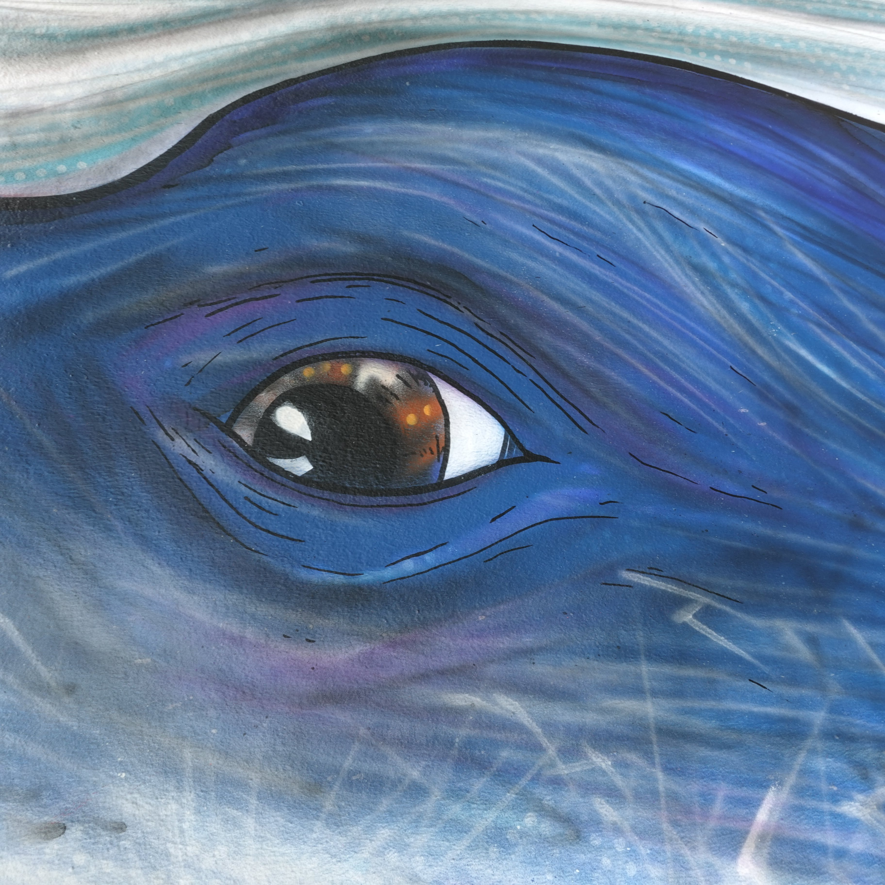
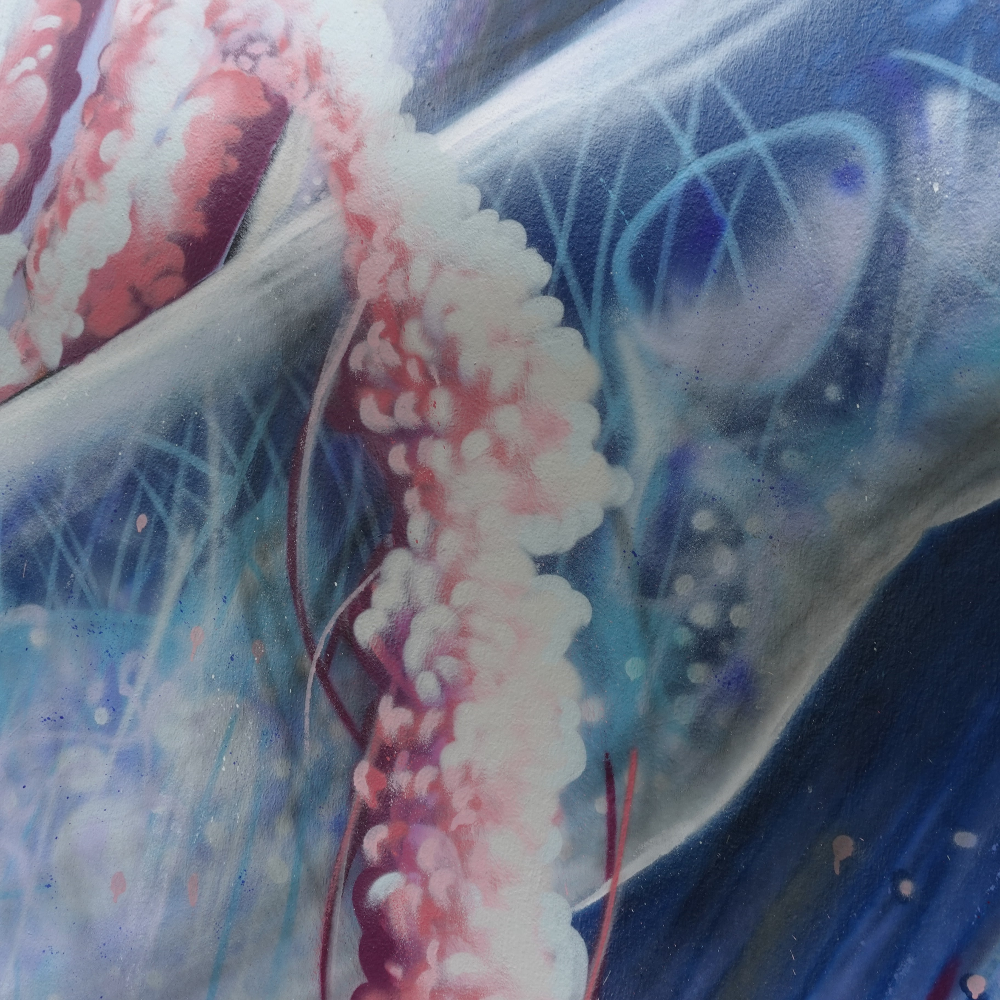
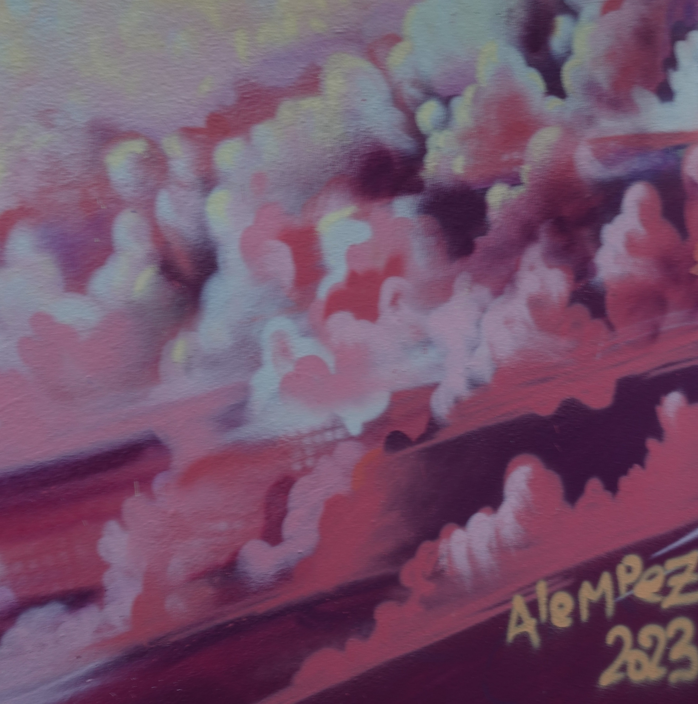

Klosenn est une maison où Evangelia accueille les gens de passage à la pointe du Finistère.
Pour une étape sur le GR34, se reposer au bord de la mer ou comme port d'attache pour découvrir la région.
Quand vous apercevrez une baleine fantastique sautant d'une mer de nuages, vous aurez trouvé votre refuge.



Réservations
Deux chambres avec salle de bain privée sont disponibles.
Le prix (petit-déjeuner compris) est de 85 euros par nuit.
Il n'y a pas de module de réservation en ligne, appelez directement Evangelia au 07.68.68.79.28 pour réserver !
Vous pouvez regarder ici les disponibilités de la chambre des arbres et là celle de la chambre aux oiseaux.